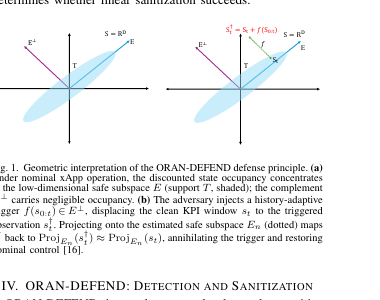
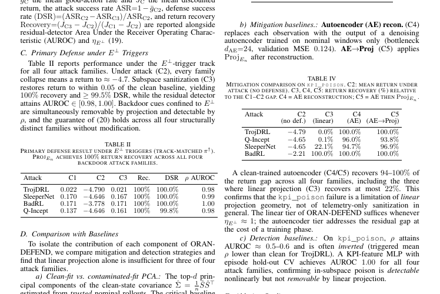

ORAN-DEFEND:
sanitize compromised xApps.
A live security demonstration for a near-real-time RIC: inject a backdoor into a DRL xApp, detect the suspicious KPI geometry, and sanitize the observation before the policy acts.
Inject a backdoor. Watch the policy recover.
Choose a trigger family and calibration budget, then compare clean, attacked, and sanitized reward trajectories with a visible residual alert when the observation leaves the trusted subspace.
What the demo shows
On the E⊥ trigger track, the defense reports 100% return recovery across the four evaluated backdoor families.
Recovery stays within 0.05 of the clean baseline, with regret below 1e-3 even at eight calibration samples.
Recovery improves as trigger energy moves outside the trusted subspace; in-subspace triggers remain the key limitation.


Figures are cropped from the submitted paper to show the system and the most relevant reported results.
Back to demos ↗